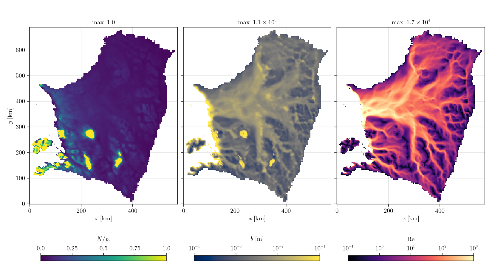

Thwaites
Thwaites Glacier on the 2 km grid of (Kazmierczak et al., 2024), with their inverted friction coefficient. The default sheet is simulated for one year of 1-day steps. The loader is load_thwaites in docs/make_figures.jl, which also makes the figure; the input files are in docs/src/examples/input/Thwaites.
using Shakti
# Load the data
d = load_thwaites()
# d.xc, d.yc cell-centre coordinates (m)
# d.DX grid spacing (m)
# d.mask GROUNDED / OCEAN / OTHER_BASIN cell types
# d.H, d.zb ice thickness and bed elevation (m)
# d.A flow-law parameter (Pa^-3 s^-1)
# d.G geothermal heat flux (W m^-2)
# d.ub_x, d.ub_y sliding speed (m s^-1)
# d.C friction coefficient
# d.v0 regularization speed of the sliding law (m s^-1)
# Grid
Nx, Ny = size(d.H)
grid = Grid(Nx, Ny, (Nx - 1) * d.DX, (Ny - 1) * d.DX)
# Sliding law
sl = RegularizedCoulombV0SlidingLaw(grid, d.C, d.v0)
# Model parameters
p = ModelParameters() # defaults
# Initial state: a gap of b0 everywhere, the surface above the gap, no surface input
b0 = 1e-3 # initial gap height (m)
b = fill(b0, Nx, Ny)
zs = d.zb .+ d.H .+ b # ice surface elevation (m)
state = State(grid)
set_initial_conditions!(state, grid, p, sl, d.mask, d.A, d.zb, zs, b, d.G, d.ub_x, d.ub_y,
zeros(Nx, Ny), zeros(Nx + 1, Ny), zeros(Nx, Ny + 1))
# Solver
max_iter = 500 # Picard iterations per step
tol = 1e-6 # Picard tolerance
ps = PicardSolver(max_iter, tol, CUDSSDirectSolver(grid; structure = :general), grid) # LUDirectSolver(grid) on CPU
# Run
nsteps = 365 # 1 year
dt = 86400.0 # 1 day (s)
output = ["N", "b", "Re", "po"] # fields written to file
observer = IOObserver(output, [0, nsteps], NetCDFFileWriter(), "thwaites.nc")
sim = Simulation(grid, state, nsteps, floattype(dt), p, ConstantMeltInput(), sl; ps = ps, observer = observer)
run!(sim)| Grid | Grounded cells | Steps | N/p_o | Mean N | Max b |
|---|---|---|---|---|---|
| 288 x 345 | 51 672 | 365 x 1 day | 0 to 1 | 1.67 MPa | 1.08 m |
Wall times are on the Performance page.

Over most of the bed the water pressure is close to the overburden (N/p_o near 0), as in Kazmierczak et al. The water drains through a branching network that converges on the main trunk, where the flow is turbulent (Re up to $10^4$). In the isolated patches at N/p_o = 1 the gap is open but holds no water, so p_w = 0: unfilled cavities allow this, filled cavities would put a negative p_w there.